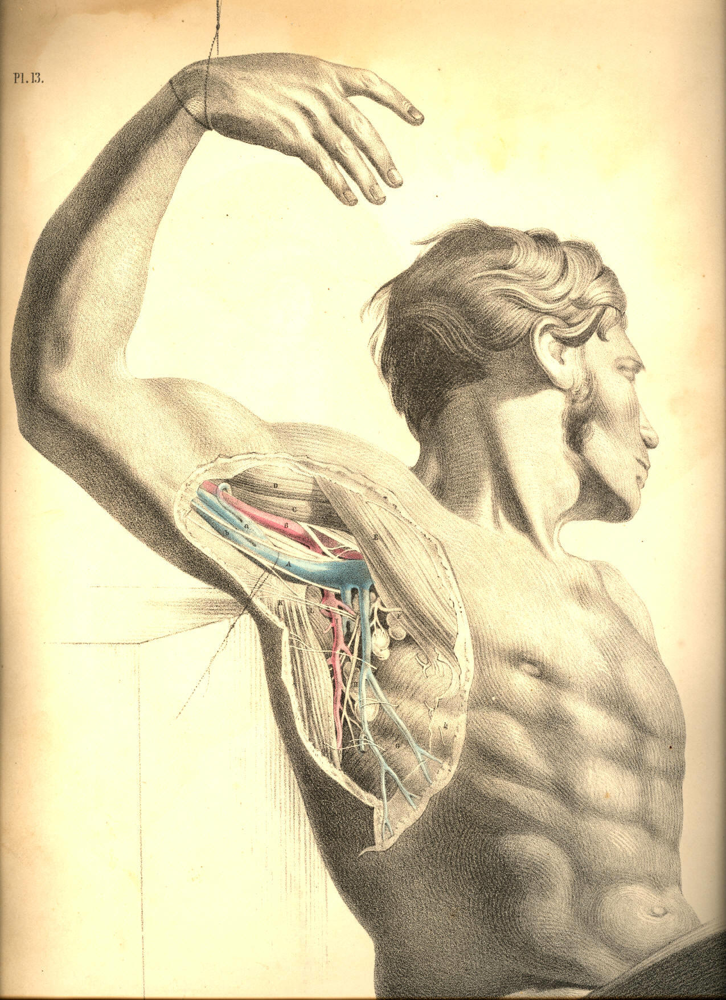
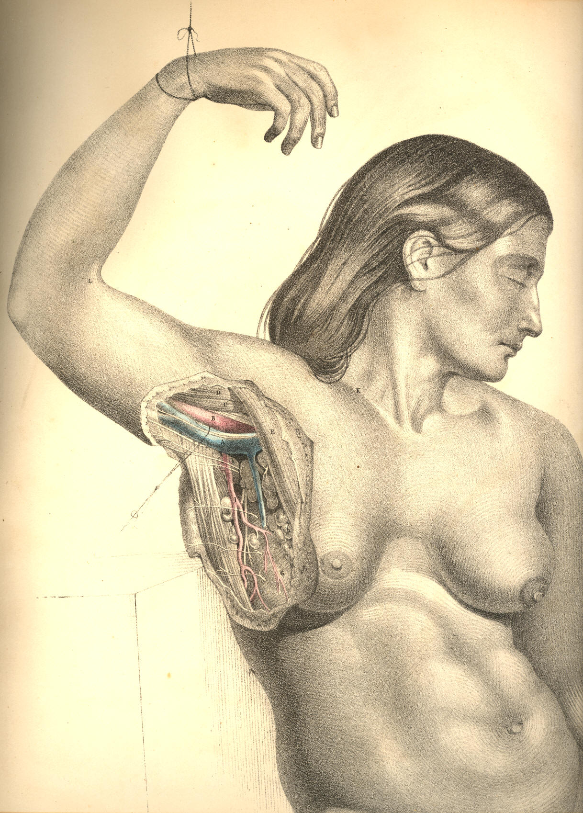

COMMENTARY ON PLATES 13 & 14.
THE SURGICAL FORM OF THE MALE AND FEMALE AXILLAE COMPARED.
Certain characteristic features mark those differences which are to be
found in all corresponding regions of both sexes. Though the male and
female bodies, in all their regions, are anatomically homologous or
similar at basis, yet the constituent and corresponding organs of each
are gently diversified by the plus or minus condition, the more or the
less, which the development of certain organs exhibits; and this
diversity, viewed in the aggregate, constitutes the sexual difference.
That diversity which defines the sexual character of beings of the same
species, is but a link in that extended chain of differential gradation
which marks its progress through the whole animal kingdom. The female
breast is a plus glandular organ, situated, pendent, in that very
position where, in a male body, the unevolved mamma is still
rudimentarily manifested.
The male and female axillae contain the same number and species of
organs; and the difference by which the external configuration of both
are marked mainly arises from the presence of the enlarged mammary
gland, which, in the female, Plate 14, masks the natural outline of the
pectoral muscle, E, whose axillary border is overhung by the gland; and
thus this region derives its peculiarity of form, contrasted with that
of the male subject.
When the dissected axilla is viewed from below, the arm being raised,
and extended from the side, its contained parts, laid deeply in their
conical recess, are sufficiently exposed, at the same time that the
proper boundaries of the axillary cavity are maintained. In this point
of view from which the axillary vessels are now seen, their relative
position, in respect to the thorax and the arm, are best displayed. The
thickness of that fleshy anterior boundary formed by both pectoral
muscles, E F, Plate 13, will be marked as considerable; and the depth at
which these muscles conceal the vessels, A B, in the front aspect of the
thoracico-humeral interval, will prepare the surgeon for the
difficulties he is to encounter when proceeding to ligature the axillary
artery at the incision made through the anterior or pectoral wall of
this axillary space.
The bloodvessels of the axilla follow the motions of the arm; and
according to the position assumed by the arm, these vessels describe
various curves, and lie more or less removed from the side of the
thorax. While the arm hangs close to the side, the axillary space does
not (properly speaking) exist; and in this position, the axillary
vessels and nerves make a general curve from the clavicle at the point
K, Plate 14, to the inner side of the arm, the concavity of the curve
being turned towards the thoracic side. But when the arm is abducted
from the side, and elevated, the vessels which are destined to supply
the limb follow it, and in this position they take, in reality, a
serpentine course; the first curve of which is described, in reference
to the thorax, from the point K to the head of the humerus; and the next
is that bend which the head of the humerus, projecting into the axilla
in the elevated position of the member, forces them to make around
itself in their passage to the inner side of the arm. The vessels may be
readily compressed against the upper third of the humerus by the finger,
passed into the axilla, and still more effectually if the arm be raised,
as this motion will rotate the tuberous head of the humerus downwards
against them.
The vessels and nerves of the axilla are bound together by a fibrous
sheath derived from the membrane called costo-coracoid; and the base or
humeral outlet of this axillary space, described by the muscles C, K, E,
G, Plate 13, is closed by a part of the fascial membrane, g, extended
across from the pectoral muscle, E, to the latissimus dorsi tendon, K.
In the natural position of the vessels at that region of their course
represented in the Plates, the vein A overlies the artery B, and also
conceals most of the principal nerves. In order to show some of these
nerves, in contact with the artery itself, the axillary vein is drawn a
little apart from them.
The axillary space gives lodgment to numerous lymphatic glands, which
are either directly suspended from the main artery, or from its
principal branches, by smaller branches, destined to supply them. These
glands are more numerous in the female axilla, Plate 14, than in the
male, Plate 13, and while they seem to be, as it were, indiscriminately
scattered here and there through this region, we observe the greater
number of them to be gathered together along the axillary side of the
great pectoral muscle; at which situation, h, in the diseased condition
of the female breast, they will be felt to form hard, nodulated masses,
which frequently extend as far up through the axillary space as the root
of the neck, involving the glands of this latter region also in the
disease.
The contractile motions of the pectoral muscle, E, of the male body,
Plate 13, are during life readily distinguishable; and that boundary
which it furnishes to the axillary region is well defined; but in the
female form, Plate 14, the general contour of the muscle E, while in
motion, is concealed by the hemispherical mammary gland, F, which,
surrounded by its proper capsule, lies loosely pendent from the fore
part of the muscle, to which, in the healthy state of the organ, it is
connected only by free-moving bonds of lax cellular membrane. The
motions of the shoulder upon the trunk do not influence the position of
the female mammary gland, for the pectoral muscle acts freely beneath
it; but when a scirrhus or other malignant growth involves the mammary
organ, and this latter contracts, by the morbid mass, a close adhesion
to the muscle, then these motions are performed with pain and
difficulty.
When it is required to excise the diseased female breast, (supposing the
disease to be confined to the structure of the gland itself,) the
operation may be performed confidently and without difficulty, in so far
as the seat of operation does not involve the immediate presence of any
important nerves or bloodvessels. But when the disease has extended to
the axillary glands, the extirpation of these (as they lie in such close
proximity to the great axillary vessels and their principal branches)
requires cautious dissection. It has more than once happened to eminent
surgeons, that in searching for and dissecting out these diseased
axillary glands, H, h, Plate
14, the main artery has been wounded.
As the coracoid process points to the situation of the artery in the
axilla, so the coraco-brachialis muscle, C, marks the exact locality of
the vessel as it emerges from this region; the artery ranges along the
inner margin of both the process and the muscle, which latter, in fleshy
bodies, sometimes overhangs and conceals it. When the vessel has passed
the insertion of the coraco-brachialis, it becomes situated at the inner
side of the biceps, which also partly overlaps it, as it now lies on the
forepart of the brachialis anticus. As the general course of the
artery, from where it leaves the axilla to the bend of the elbow, is one
of winding from the inner side to the forepart of the limb, so should
compression of the vessel, when necessary, be directed in reference to
the bone accordingly--viz., in the upper or axillary region of the arm,
from within outwards, and in the lower part of the arm, from before
backwards.
All incised, lacerated, or contused wounds of the arm and shoulder,
happening by pike, bayonet, sabre, bullet, mace, or arrow, on the outer
aspect of the limb, are (provided the weapon has not broken the bones)
less likely to implicate the great arteries, veins, and nerves. These
instruments encountering the inner or axillary aspect of the member,
will of course be more likely to involve the vessels and nerves in the
wound. In severe compound fractures of the humerus occurring from force
applied at the external side of the limb, the brachial vessels and
nerves have been occasionally lacerated by the sharp jagged ends of the
broken bone,--a circumstance which calls for immediate amputation of the
member.
The axilla becomes very frequently the seat of morbid growths, which,
when they happen to be situated beneath the dense axillary fascia, and
have attained to a large size, will press upon the vessels and nerves of
this region, and cause very great inconvenience. Adipose and other kind
of tumours occurring in the axilla beneath the fascia, and in close
contact with the main vessels, have been known to obstruct these vessels
to such a degree, as to require the collateral or anastomatic
circulation to be set up for the support; of the limb. When abscesses
take place in the axilla, beneath the fascia, it is this structure which
will prevent the matter from pointing; and it is required, therefore, to
lay this fascia freely open by a timely incision. The accompanying
Plates will indicate the proper direction in which such incision should
be made, so as to avoid the vessels A, B. When the limb is abducted from
the side, the main vessels and nerves take their position parallel with
the axis of the arm. The axillary vessels and nerves being thus liable
to pressure from the presence of large tumours happening in their
neighbourhood, will suggest to the practitioner the necessity for
fashioning of a proper form and size all apparatus, which in fracture or
dislocation of the shoulder-bones shall be required to bear forcibly
against the axillary region. While we know that the locality of the main
vessels and nerves is that very situation upon which a pad or fulcrum
presses, when placed in the axilla for securing the reduction of
fractures of the clavicle, the neck of the humerus, or scapula, so
should this member of the fracture apparatus be adapted, as well to
obviate this pressure upon these structures, as to give the needful
support to the limb in reference to the clavicle, &c. The habitual
use,
for weeks or more, of a hard, resisting fulcrum in the axilla, must act
in some degree like the pad of a tourniquet, arresting the flow of a
vigorous circulation, which is so essential to the speedy union of all
lesions of bones. And it should never be lost sight of, that all
grievously coercive apparatus, which incommode the suffering patient,
under treatment, are those very instruments which impede the curative
process of Nature herself.
The anatomical mechanism of the human body, considered as a whole, or
divisible into regions, forms a study so closely bearing upon practice,
that the surgeon, if he be not also a mechanician, and fully capable of
making his anatomical knowledge suit with the common principles of
mechanics, while devising methods for furthering the efforts, of Nature
curatively, may be said to have studied anatomy to little or no purpose.
The shoulder apparatus, when studied through the principle of mechanics,
derives an interest of practical import which all the laboured
description of the schools could never supply to it, except when
illustrating this principle.
The disposal of the muscular around the osseous elements of the shoulder
apparatus, forms a study for the surgeon as well in the abnormal
condition of these parts, as in their normal arrangement; for in
practice he discovers that that very mechanical principle upon which
both orders of structures (the osseous and muscular) are grouped
together for normal articular action, becomes, when the parts are
deranged by fracture or, other accident, the chief cause whereby
rearrangement is prevented, and the process of reunion obstructed. When
a fracture happens in the shaft of the humerus, above or below the
insertions of the pectoral and latissimus dorsi muscles, these are the
very agents which when the bone possessed its integrity rendered it
functionally fitting, and which, now that the bone is severed, produce
the displacement of the lower fragment from the upper one. To counteract
this source of derangement, the surgeon becomes the mechanician, and
now, for the first time, he recognises the necessity of the study of
topographical anatomy.
When a bone is fractured, or dislocated to a false position and retained
there by the muscular force, the surgeon counteracts this force upon
mechanical principle; but while he puts this principle in operation, he
also acknowledges to the paramount necessity of ministering to the ease
of Nature as much as shall be consistent with the effectual use of the
remedial agent; and in the present state of knowledge, it is owned, that
that apparatus is most efficient which simply serves both objects, the
one no less than the other. And, assuming this to be the principle which
should always guide us in our treatment of fractures and dislocations, I
shall not hesitate to say, that the pad acting as a fulcrum in the
axilla, or the perineal band bearing as a counterextending force upon
the groin (the suffering body of the patient being, in both instances,
subjected for weeks together to the grievous pressure and irritation of
these members of the apparatus), do not serve both objects, and only one
incompletely; I say incompletely, for out of every six fractures of
either clavicle or thigh-bone, I believe that, as the result of our
treatment by the present forms of mechanical contrivances, there would
not be found three cases of coaptation of the broken ends of the bone so
complete as to do credit to the surgeon. The most pliant and portable of
all forms of apparatus which constitute the hospital armamentaria, is
the judgment; and this cannot give its approval to any plan of
instrument which takes effect only at the expense of the patient.
DESCRIPTION OF PLATES 13 & 14.
PLATE 13.
A. Axillary vein, drawn apart from the artery, to show the nerves lying
between both vessels. On the bicipital border of the vein
is seen the
internal cutaneous nerve; on the tricipital border is the
nerve of
Wrisberg, communicating with some of the
intercosto-humeral nerves; a,
the common trunk of the venae comites, entering the
axillary vein.
B. Axillary artery, crossed by one root of the median nerve; b, basilic
vein, forming, with a,
the axillary vein, A.
C. Coraco-brachialis muscle.
D. Coracoid head of the biceps muscle.
E. Pectoralis major muscle.
F. Pectoralis minor muscle.
G. Serratus magnus muscle, covered by g,
the axillary fascia, and
perforated, at regular intervals, by the nervous branches
called
intercosto-humeral.
H. Conglobate gland, crossed by the nerve called "external respiratory"
of Bell, distributed to the serratus magnus muscle. This
nerve descends
from the cervical plexus.
I. Subscapular artery.
K. Tendon of latissimus dorsi muscle.
L. Teres major muscle.

Plate 13
PLATE 14.
A. Axillary vein.
B. Axillary artery.
C. Coraco-brachialis muscle.
D. Short head of the biceps muscle.
E. Pectoralis major muscle.
F. Mammary gland, seen in section.
G. Serratus magnus muscle.
H. Lymphatic gland; h h,
other glands of the lymphatic class.
I. Subscapular artery, crossed by the intercosto-humeral nerves and
descending parallel to the external respiratory nerve.
Beneath the
artery is seen a subscapular branch of the brachial
plexus, given
to the latissimus dorsi muscle.
K. Locality of the subclavian artery.
L. Locality of the brachial artery at the bend of the elbow.

Plate 14
COMMENTARY ON PLATES 15
& 16